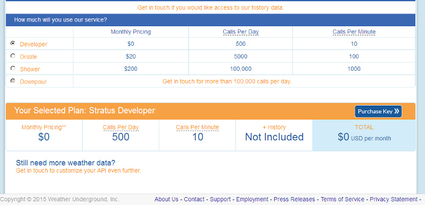

You may be interested in gathering weather data but lack the hardware to measure humidity, air pressure, dew point temperature, wind speed and so forth. The weather data added over power consumption via a multigraph reveals quite interesting tendencies, worth giving a try.
My solution was to create a "Stratus Developer" free API key for weather underground and then a small PHP script to collect the data and post to emoncms. You get 500 queries a day, so you can afford to run the script 20 times an hour or every three minutes. Just set up a cron job to do it for you.
http://www.wunderground.com/weather/api/
Here is my code:
<html>
<?php
//http://www.wunderground.com/weather/api/d/documentation.html
//Change the weather underground API and city below
$json_string = file_get_contents("http://api.wunderground.com/api/****API***/geolookup/conditions/q/***MY CITY NAME****.json");
$parsed_json = json_decode($json_string);
$location = $parsed_json->{'location'}->{'city'};
$temp_c = $parsed_json->{'current_observation'}->{'temp_c'};
$relative_humidity = $parsed_json->{'current_observation'}->{'relative_humidity'};
$pressure_mb = $parsed_json->{'current_observation'}->{'pressure_mb'};
$wind_kph = $parsed_json->{'current_observation'}->{'wind_kph'};
echo "Current temperature in ${location} is: ${temp_c}<br>";
echo "Current relative humidity in ${location} is: ${relative_humidity}<br>";
echo "Current pressure in ${location} is: ${pressure_mb}<br>";
echo "Current wind speed in ${location} is: ${wind_kph}<br>";
//Change the URL and EmonCMS API below
$url = 'http://***********/emoncms3/api/post?apikey=***EMONCMS_API*****&json={humidity:' . $relative_humidity . ',pressure:' . $pressure_mb . ',wind:' . $wind_kph . ',temp:' . $temp_c .'}';
echo $url;
$ch = curl_init();
curl_setopt($ch, CURLOPT_URL,$url);
curl_setopt($ch, CURLOPT_RETURNTRANSFER, 1);
$contents = curl_exec ($ch);
curl_close ($ch);
?>
</html>
Re: Software only solution for feeding weather data
Great idea! thanks for posting you code mharizanov
Re: Software only solution for feeding weather data
Thanks! This was exactly what I was looking for.
Re: Software only solution for feeding weather data
Super great!!! Thank you mharizanov, for this old post, these api works very well!!
Installation in crontab every 3 minutes:
*/3 * * * * /usr/bin/php /home/pi/wu2emoncms.php
Below my code:
#### my code: wu2emoncms.php#####
<html>
<?php
//Weather underground setting
$wuapi='xxxxxxxxxxxxxxxx'; //Weather underground API
$pws='ILAZIORO62'; //Personal Wheater station ID closer to your location
$lang='IT';
//EmonCMS setting
$nodeid='12'; //node id
$emoncms='localhost/emoncms'; //emoncms url
$emoncmsapi='yyyyyyyyyyyyyyyyyyyyyyyyyyyyyyyy'; //EmonCMS r&w Api key
$json_string = file_get_contents("http://api.wunderground.com/api/".$wuapi."/conditions/lang:".$lang."/pws:1/q/pws:".$pws.".json");
$data = json_decode($json_string);
if ($data->response->error) {
echo 'Error: '.str_replace(':',' ',$data->response->error->type);
die;
}
$co=$data->{'current_observation'};
$temp_c = str_replace(',','.',$co->{'temp_c'});
$relative_humidity = trim($co->{'relative_humidity'},'%');
$pressure_mb = $co->{'pressure_mb'};
$wind_degrees = $co->{'wind_degrees'};
$wind_kph = str_replace(',','.',$co->{'wind_kph'});
$dewpoint_c = str_replace(',','.',$co->{'dewpoint_c'});
$precip_1hr_metric = str_replace(',','.',$co->{'precip_1hr_metric'});
$temp_feelslike_c = str_replace(',','.',$co->{'feelslike_c'});
echo "Current Condition @ ".$co->{'observation_location'}->{'city'}.'<br>';
echo " Temperature is: $temp_c C<br>";
echo " Temperature Feel Like is: $temp_feelslike_c C<br>";
echo " Relative humidity is: $relative_humidity%<br>";
echo " Pressure is: $pressure_mb (mb)<br>";
echo " Wind direction is: $wind_degrees ° <br>";
echo " Wind speed is: $wind_kph kmh<br>";
echo " Dewpoint is: $dewpoint_c C<br>";
echo " Precipitation 1hr is: $precip_1hr_metric mm<br>";
$url = 'http://'.$emoncms.'/input/post.json?json={temp:'.$temp_c.',humidity:'.$relative_humidity.',pressure:'.$pressure_mb.',wind_kph:'
.$wind_kph.',wind_dir:'.$wind_degrees.',dewpoint:'.$dewpoint_c.',precip:'.$precip_1hr_metric.'
,temp_feel:'.$temp_feelslike_c.'}&node='.$nodeid.'&apikey='.$emoncmsapi;
$ch = curl_init();
curl_setopt($ch, CURLOPT_URL,$url);
curl_setopt($ch, CURLOPT_RETURNTRANSFER, 1);
$contents = curl_exec ($ch);
curl_close ($ch);
echo "<br>Send Data to emoncms OK!!"
?>
</html>
#### end my code: wu2emoncms.php#####
Edit - wrapped long lines - BT
Re: Software only solution for feeding weather data
I took the code created by Martin & Gabriele (thank you!) and modified it slightly for my own needs. There are issues with the post to emoncms.org:
http://emoncms.org/input/post.json?json={temp:86,humidity:27}&node=12&apikey=EMONCMS-API-KEY
The post returns an “ok” every time and 70% to 80% of the time the Temperature and Humidity data appear in Feed area. But 20% to 30% of the time the data does not make it to Input or Feed areas (even though the emoncms.org server responds to the post with an “ok”).
The PHP code is located on the emonPi in the “/home/pi/data/myApps” directory. The cron job runs once per hour at 3 minutes past the hour.
3 * * * * /usr/bin/php /home/pi/data/myApps/wu2emoncms.php >> /var/log/wu2emoncms.php.log 2>&1
Any ideas & hints would be greatly appreciated!
Re: Software only solution for feeding weather data
Can you confirm the data was actually populated before it was sent to emoncms?
What has been logged in /var/log/wu2emoncms.php.log when the data is missing from emoncms?
Paul
Re: Software only solution for feeding weather data
Yes - I can confirm via the log file and the data is being populated. This is the log for a post that was missed earlier today:
Thursday 30th of July 2015 06:03:02 AM
URL is: http://emoncms.org/input/post.json?json={temp:67,humidity:70}&node=12&apikey=EMONCMS-API-KEY
Response from POST: ok
This is the PHP code updated to gather the Response from the emoncms.org:
$url = 'http://' .$emoncms. '/input/post.json?json={temp:' .$temp_f. ',humidity:' .$relative_humidity. '}&node=' .$nodeid. '&apikey=' .$emoncmsapi;
echo "\nURL is: " .$url. "\n";
$ch = curl_init();
curl_setopt($ch, CURLOPT_URL,$url);
curl_setopt($ch, CURLOPT_RETURNTRANSFER, 1);
$contents = curl_exec ($ch);
curl_close ($ch);
echo "\nResponse from POST: " .$contents. "\n";
Jon
Re: Software only solution for feeding weather data
What feed type are you logging with?
Are the datapoints totally missing from emoncms or are they zero or null data ?
Can you try using a phptimeseries variable feed as well for a while to compare the two?
Paul
Re: Software only solution for feeding weather data
The data points are totally missing (no NULL, no zero). I just added the PHPTimeSeries. Here is how things are set up now (see images). I'll check the PHPTimeSeries in a few hours to see what happens.
Jon
Re: Software only solution for feeding weather data
Both of the Feeds (with PHPFIWA and the new with PHPTIMESERIES) drop data at the same time. Over a period of 15 hours there were three dropped posts. The wu2emoncms.php.log has post responses as OK. Did I set up something incorrectly?
Jon
Re: Software only solution for feeding weather data
It's a long shot but could you swap the order of the phpfiwa and phptimeseries in case the phpfiwa is blocking the phptimeseries in some way and provide the relative send url and confirmation for the missing data from the emonhub log. These three things, correct url formation, "ok" response and missing phptimeseries entry (with the feed being the very first process) would certainly suggest data is being lost in emoncms.
Paul
Re: Software only solution for feeding weather data
I flipped the order of the phpfiwa and phptimeseries. I'll let you know what happens!
Just curious - is it possible to POST data to the emoncms within the emonPi? I've not seen anything written about that so I am guessing not.
Jon
Re: Software only solution for feeding weather data
I tried this , but i get a stdClass $error from tje $json_string= line, it polls the data but does not appear on emoncms as node 12 , any help? , new to this so all input would be appreciated
Re: Software only solution for feeding weather data
Mike,
What happens when you enter the completed $json_string line into a web browser? Does it return an error or the current conditions?
The complete $json_string should look similar to this:
http://api.wunderground.com/api/Your_Wunderground_API_Key/conditions/q/pws:ILAZIORO62.json
PS - I'm not an expert at PHP, Wundeground APIs, emoncms APIs. Most of the above I just learned recently!
Re: Software only solution for feeding weather data
Paul - With the phptimeseries first, over a period of 25 hours there are 2 dropped posts.
Re: Software only solution for feeding weather data
"and provide the relative send url and confirmation for the missing data from the emonhub log"
Can we see the emonhub.log entires for those missing datapoints?
I'm no expert either I'm just trying to establish where you should focus your efforts, is it definitely in emoncms or is it a network, emonhub, wunderground or parsing script issue and for that we need to see the same packets leave and arrive (or not as the case maybe).
Paul
Re: Software only solution for feeding weather data
It returns the data, but does not appear to be posting to Emoncms, nor does the crontab seem to be running every 2 minutes like its set to . When i run the php via ssh is when i see the error and presume that is why it doesnt run again as it should.
Re: Software only solution for feeding weather data
Paul - Sorry, I forgot to mention the emonhub log... I went thru the emonhub.log and the emoncms.log files on my emonPi. There are no references to the wu2emoncms.php app or a my post to the emoncms.org server. I do see when the cron runs in the emonPi syslog.
I am not sure how to access the emonhub log on the emoncms.org server. Can you point me in the correct direction for viewing those logs? (I stupidly assumed I would not have access to the logs on the emoncms.org server)
Jon
Re: Software only solution for feeding weather data
Jon - Sorry, my mistake I thought you were using emonHub locally, So rather than the emonhub logs we need to check your own "wu2emoncms" logs.
emonHub is not installed at emoncms.org, although often installed on the same machine as emoncms, emonhub is the "remote" interface for emoncms and passes collated data to emoncms remote and/or local.
Mike - You need to get the assembled url to function correctly from a browser first, when you are sure you have a fully functioning url you can then test the script, then a single cron entry and then a scheduled cron. If you are not getting a valid response to a browser url there could be an account problem or just a error in the url formation.
Be aware the "free" accounts with wunderground only allow a certain number of uses per day, last time I checked (if memory serves) it worked out to a minimum of 3min interval any less and you will go over your limit, every day. This limit is easily hit when developing or debugging too.
Once you are unable to get a valid response you will probably get an error message and too many logged error messages could choke the log file IF you are running a read-only OS image, Whilst I have no idea if you are or not I have experienced a "runaway" error on an un capped log in RAM and the cron stopped functioning.
Paul
Re: Software only solution for feeding weather data
Weather Underground free accounts are good for 500 calls/day at a max rate of 10 calls/minute.

Re: Software only solution for feeding weather data
Thanks Bill that makes sense.
24hrs x 60mins = 1440mins per day / 500 per 24hrs = 2.88mins (2mins 52.8secs) rounded to 3mins.
The 10 calls per minute is just to control the speed at which you bombard the server and use the 500 per day ie a daily allowance can be burnt no quicker than 50 minutes in a race condition.
Paul
Re: Software only solution for feeding weather data
YVW,S!
Re: Software only solution for feeding weather data
Paul / Jon
It works properly in a browser , no error its when i run the script php script.php in an ssh that I see the error below , i thinks its simply a syntax error in my copying the original script , I only adjusted the cron to a 2 minute interval to see if it was actually running , I believe that portion of my problem is resolved.
PHP Notice: Undefined property: stdClass::$error in /php/wu2emoncms/weather.php on line 12
Current Condition @ Heller Drive, Newcomerstown<br> Temperature is: 82.7 F<br> Temperature Feel Like is: 83 F<br> Relative humidity is: 47%<br> Pressure is: 29.95 (in)<br> Wind direction is: 302 ° <br> Wind speed is: 0 mph<br> Dewpoint is: 60 F<br> Precipitation 1hr is: 0.00 (in)<br><br>Send Data to emoncms OK!!</html>
Line 12 reads
$data=json_decode($json_string);if($data->response->error){echo'Error:'.str_replace(':','',$data->response->error->type);die;}
Mike
Re: Software only solution for feeding weather data
Mike,
I could not fix that code segment so I ended up commenting it out for the short term (until I have time to learn more about PHP and the responses from wunderground). Once I did that then everything ran without error.
/*
if ($data->response->error) {
echo 'Error: '.str_replace(':',' ',$data->response->error->type);
die;
}
*/
Jon
Re: Software only solution for feeding weather data
Jon - the other part i know im having trouble with is adding the variables to the emoncms.org server im not so sure they care spelled out by the script although it does specify a node "12" , ive only got about a week under my belt on this so bear with ..
Re: Software only solution for feeding weather data
Mike,
If it helps, this is what my node 12 post originally looked like:
http://emoncms.org/input/post.json?json={temp:69,humidity:90,pressure:30.00,wind_mph:0,wind_dir:0,dewpoint:66,precip:-9999.00,temp_feel:69} &node=12&apikey=emoncms.org_Write_API_Key
The very first post to Node 12 created the variable on the emoncms.org Inputs page. I did not do anything special. My units are for the US (degrees Fahrenheit, inches, miles per hour, etc.). Since I was experimenting, the post is now just temperature & humidity:
http://emoncms.org/input/post.json?json={temp:86,humidity:27}&node=12&apikey=emoncms.org_Write_API_Key
This post with just temperature and humidity looks like this on the Inputs page (see attached image):
Re: Software only solution for feeding weather data
Paul,
Here are the PHPTIMESERIES data points. The 22:03:00 run and the 04:03:00 run are missing from the Feed.
Is there other info that I can provide?
Jon
Epoch Temp UTC CDT
1438740240000 71 08/05/2015 02:04:00 08/04/2015 21:04:00
1438747440000 67 08/05/2015 04:04:00 08/04/2015 23:04:00 x
1438751040000 66 08/05/2015 05:04:00 08/05/2015 00:04:00
1438754640000 64 08/05/2015 06:04:00 08/05/2015 01:04:00
1438758240000 63 08/05/2015 07:04:00 08/05/2015 02:04:00
1438761840000 63 08/05/2015 08:04:00 08/05/2015 03:04:00
1438769040000 62 08/05/2015 10:04:00 08/05/2015 05:04:00 x
1438772640000 62 08/05/2015 11:04:00 08/05/2015 06:04:00
from the wu2emoncms.php.log - Dates & Times below are CDT
Good
2015-08-04 21:03:01,480 Running wu2emoncms.php
2015-08-04 21:03:01,481 WUnderground URL is: http://api.wunderground.com/api/WU_API/conditions/q/IL/KPWK.json
Observation time: Last Updated on August 4. 8:52 PM CDT
Observation Epoch (UTC) is: 1438739520
Temperature is: 71°F
Relative humidity is: 63%
2015-08-04 21:03:01,706 URL is: http://emoncms.org/input/post.json?json={temp:71,humidity:63}&node=12&apikey=EMONCMS_API
2015-08-04 21:03:01,940 Response from POST: ok
Missing
2015-08-04 22:03:01,513 Running wu2emoncms.php
2015-08-04 22:03:01,514 WUnderground URL is: http://api.wunderground.com/api/WU_API/conditions/q/IL/KPWK.json
Observation time: Last Updated on August 4. 9:52 PM CDT
Observation Epoch (UTC) is: 1438743120
Temperature is: 69°F
Relative humidity is: 70%
2015-08-04 22:03:01,790 URL is: http://emoncms.org/input/post.json?json={temp:69,humidity:70}&node=12&apikey=EMONCMS_API
2015-08-04 22:03:02,32 Response from POST: ok
Missing
2015-08-05 04:03:01,596 Running wu2emoncms.php
2015-08-05 04:03:01,596 WUnderground URL is: http://api.wunderground.com/api/WU_API/conditions/q/IL/KPWK.json
Observation time: Last Updated on August 5. 3:52 AM CDT
Observation Epoch (UTC) is: 1438764720
Temperature is: 62°F
Relative humidity is: 84%
2015-08-05 04:03:01,827 URL is: http://emoncms.org/input/post.json?json={temp:62,humidity:84}&node=12&apikey=EMONCMS_API
2015-08-05 04:03:02,62 Response from POST: ok
Re: Software only solution for feeding weather data
Jon ,
Im going to back up and go step by step what you told me to how you got to where you are and see how that goes with 1 or 2 variables, but did you first have to add the nodes to emoncms.org with a json line or did they jsut(pun typo intended) appear on there when you ran it?
Mike
Re: Software only solution for feeding weather data
Mike - they jsut appeared with the data. So this POST created Node 12 and the Temp and Humidity inputs included the first data points:
http://emoncms.org/input/post.json?json={temp:86,humidity:27}&node=12&apikey=EMONCMS-API-KEY
And this would create new stuff for Node 14:
http://emoncms.org/input/post.json?json={temp:86,humidity:27}&node=14&apikey=EMONCMS-API-KEY
This come from Martin & Gabriele's example above and from the http://emoncms.org/input/api Input API page.
Jon
Re: Software only solution for feeding weather data
Jon - Ok so we do see 2 posts with what seems likes valid data, url and response and those 2 packets are not seen when exporting CSV, I was rather hoping we could spot something external to emoncms as I'm not clued up enough on the inner workings of emoncms to fathom out the most likely cause and the data set is probably considered too small to instigate an investigation at this stage.
I have experienced occasional missing datapoint mysteries myself but have not found any rhyme or reason to them either.
There is an easy "workaround" that you can use though.
I noticed that the parsing script does not use the timestamp supplied with the data which seems odd to me. the timestamping is left for emoncms to do upon reciept (hopefully) within a couple of seconds of the data being fetched, parsed and forwarded, but it is even ~11mins old at that time.
By parsing the " Observation Epoch (UTC) is:" value with a " &time= " prefix into the emoncms input api url you would be not only using the correct timestamp but also releiving emoncms of that responsibility, (possibly reducing chance of error?).
The main benefit in this particular instance is that you can then send the same data more than once, either by having additional cron entries or just by adding a 'wait nSecs and send again' to the script. It's a quick and dirty """fix""" that could be improved to check the "last updated" time or value of the feed using the feed api of emoncms, The likelyhood of emoncms losing the same post twice I would hope is slim to none. Any repeated data will just overwrite the last, not ideal I know but not really a big problem either.
To fix this properly I think you will need to start by changing the log output of the script (or add a 2nd one) to log the data rather than messages, in a format that is easily handled (eg csv) to get a bigger data set to help locate the root issue.
Jon - The named inputs should get created automatically when you run the script, You said the "url" worked perfectly when run in a browser, so they should already be there, or at least you should of witnessed the process if experimenting with different values and names etc.
The best thing to do is indeed to start with one or two variables, in the browser, then in the script, then lastly in cron as I suggested before.
Paul
Re: Software only solution for feeding weather data
Paul,
I actually started my script experiments using the “&time=“ parameter. Here is an example of a POST from two weeks ago:
http://emoncms.org/input/post.json?json={temp:84.3,humidity:71,pressure:29.93,wind_mph:1,wind_dir:48,dewpoint:74,precip:0.00,temp_feel:91} &node=12&apikey=EMONCMS_API_KEY&time=1437837455
With the “&time=“ parameter I also tried a double post. I could not re-post the same URL - it would be missing data also (very odd!). Longer delays between posts and additional attempts did not matter.
I will add the “&time=“ back into the post and test again.
A simple csv of weather data like "observed time comma temp comma humidity return"? Or is there other data or info that might help?
Re: Software only solution for feeding weather data
"A simple csv of weather data like "observed time comma temp comma humidity return"? Or is there other data or info that might help?"
The timestamp is important and you could include the response too, I know it will probally always be 'ok' but you never know, the data content isn't important if you want to minimize writes or file size, when debuging it can be tricky knowing in advance what will be relevent and what isn't but at this point we are more interested in IF a post is successful rather than if the content is right, but there again is something in the data causing an issue??
Including the url as a string would be good to check too.
Important points are to have one line for each send attempt and consistent columns to compare in a spreadsheet.
Interesting point about not being able to repost as you should always be able to overwrite with a phptimeseries unless running low-write on a SDcard, hopefully a pattern will emerge.
Paul
Re: Software only solution for feeding weather data
But that does not work when I try it on emoncms.org nothing appears. I does however work on my local emoncms server if i add to it http://my.i.p/emoncms/ then the rest
no script no pulling data, just injecting the two pieces of data as is on the line above i get temp 86 and humidity 27 as i would expect.
strangest part is i get the OK response back from the .org server
(yes i did use the proper keys )
Stumped
Re: Software only solution for feeding weather data
Mike - Try using a simple manual url to emoncms.org and work back
http://emoncms.org/input/post.json?json={temp:22}&node=1&apikey=API_KEY
If you are already logged in the browser clicking the link above should create an input called "temp" with a value of 22 for node 1, adding your emoncms.org "Read & Write:" api key as shown to the browser url should allow you to post after logging out of emoncms ( edit the value so it is obvious if successful) you will need to log back in to confirm this.
Assuming it works you can either expand the payload or add the details used to the script, run manually once and confirm the output is as expected and emoncms has received the data.
If it does, great. If it does not, comment out the fetch and parse parts of the script and manually set the scripts vars to construct the url that you know works, if that works reintroduce original parts of the script to establish what does or doesn't work.
Based on what you have told us I strongly suspect the issue is with the emoncms.org address/url formation, can you post some of the wu2emoncms.php.log? (remember to hide your apikey)
Paul
Re: Software only solution for feeding weather data
I got it working by manipulating things, but now im wanting a widget to show wind direction in a 360 rotation , or figure out a way to input something other than a numerical value such as wind direction is "NNW" as a alpha string
Mike
Re: Software only solution for feeding weather data
Glad you got it working, would be so good as to confirm if the script needs fixing or not for the benefit of future readers of this thread?
The Wind turbine monitoring and Wind direction visualization threads look like a good place to start re the widget.
Paul
Re: Software only solution for feeding weather data
Paul ,
The problem appears to have been that somehow I missed that i had an error in my post i had an invalid directory
http://emoncms.org/
emoncms/input/post.json?json={temp:86,humidity:27}&node=14&apikey=EMONCMS-API-KEYPerhaps im wrong but appears the directory structure has changed over time and some information is dated,
Mike
Re: Software only solution for feeding weather data
Paul ,
I looked at those and posted there, but think they are inactive at this time. Im going to try and search around the web and see what i can learn looks like i need a lesson in java for this leg of the adventure.
Mike
Re: Software only solution for feeding weather data
Paul - I tried a number of different things:
1) Posting data without the “&time=“ parameter
2) Posting data to PHPTimeSeries feed with “&time=“ parameter
3) Posting same data, multiple times to PHPTimeSeries feed with “&time=“ parameter
The process that seems to work 100% (so far) is:
Get current Weather (for me updated once per hour)
http://api.wunderground.com/api/WU_API_KEY/q/…
Get last data point from PHPTimeSeries feed
http://emoncms.org/feed/timevalue.json?apikey=API_KEY_READ&id=Feed_ID
Compare time stamps - weather observation epoch compared to last PHPTimeSeries feed data point
If weather data is newer, post new weather data to PHPTimeSeries feed
http://emoncms.org/input/post.json?json={temp:73,humidity:48}&node=12&apikey=API_KEY_WRITE&time=1440370320
Get last data point from PHPTimeSeries feed (again!)
http://emoncms.org/feed/timevalue.json?apikey=API_KEY_READ&id=Feed_ID
Compare again & if weather data is still newer (meaning the 1st post to emoncms.org was dropped) then add 60 seconds to "&time" and repost new data PHPTimeSeries feed
http://emoncms.org/input/post.json?json={temp:73,humidity:48}&node=12&apikey=API_KEY_WRITE&time=1440370380
Jon
Re: Software only solution for feeding weather data
Well that is bizarre!
Paul
Re: Software only solution for feeding weather data
Yes it is! Thanks for your help! Jon
Re: Software only solution for feeding weather data
Paul - could you point me to an article that explains or defines PHPTIMESERIES, PHPFIWA, PHPFINA? I'd like to understand these better and why to pick one feed over another. I searched thru the website and found many issues related to the above but not the explanations or definitions.
Jon
Re: Software only solution for feeding weather data
There's this, but I'm not sure whether it is still accurate.
https://github.com/openenergymonitor/documentation/tree/master/BuildingB...
Re: Software only solution for feeding weather data
The link Robert supplied is a good insight to the anatomy and reasoning of the php feeds (I believe it is still accurate) but you should also look to see if the values are dropping through a crack in the code in emoncms since there is a probability the values are being excluded via logic rather than "missing" from the feed.
If using emoncms.org the version is v8.3.5 and the key areas to check are the inputs and feeds Modules and the engines.
Paul
Re: Software only solution for feeding weather data
Jon,
just seen your request in this post, take a look at
http://openenergymonitor.org/emon/node/11223
I post data from emonPi to emonccs, the emonPi was the only thing available for me to run a script on, works very well
Keith
Re: Software only solution for feeding weather data
Will this feature be built in to the emoncms? Could it be done?
It would be a very nice feature in the emoncms, to just add the name of a weatherstation and maybe the login ID for wunderground, and then have the emoncms download data from a specified weather station and display it like a feed from a emon unit.
With no commandline hassle, scripts, code or stuff like that. Just in the emoncms GUI.
Best regards
//J
Re: Software only solution for feeding weather data
Just an update on my dilema,
Started uploading to wunderground from my own weatherstation , then redownloading it back to emoncms with the script , weewx could do it directly from the weather station but i cant find a driver for the USB interface on the raspberry to just run the script locally and avoid wunderground all together
I saw someone ask about loading it to emoncms locally , i think their question was about on the pi , yes you can. I upload to three places , cms.org local on the pi and to my own instance of emoncms server that i run on a machine on the network here, works fine you just need to repeat the pearl section of the script
But all seems to be working out , may need to find a different weather station and do it with that.
Mike
Re: Software only solution for feeding weather data
Thanks for input Mike!
Do you think there can be any easy way to get this done that will not require tampering with scripts, drivers or stuff like that?
I would be grate to have a weather station that works straight with the emoncms. No fuzz, just like any of the nodes in the network.
If you are situated in Europe, conrad has some good weather stations for low prices. They also have ones that upload directly to wunderground that costs €200.
In the US there are plenty as well, but models can be different due to voltage and ROHS. In the wunderground website you can find some recommendations for online weather stations.
I chose one cheap model just to try it out. I noticed some obvious design flaws like the wind speed meter to close to the rain meter (will cause problems in snow) but it had rain/wind/temp/humidity/solarpower and that is what i needed. Pressure could be nice too.
I would really like a fast and simple plugin for the emoncms, that just fetches data to feeds with no advanced setup process required.
I tried to write a thread about it here but no really good stuff turned up just yet.
//J
Re: Software only solution for feeding weather data
J,
Theres no easy out of the box answer for what you want , someones gotta tell it what data you want where it needs to go and the API key to got there node you want it at to appear under, only you know that information .
Its no more complicated than editing text.
M
Re: Software only solution for feeding weather data
"Will this feature be built in to the emoncms? Could it be done?"
Just over a year ago I wrote an emonHub "wunderground" interfacer but there was little or no interest at that time so it didn't make it into the mainstream version. If you have a "wunderground" account you could just add the details in emonhub.conf for example
# http://www.wunderground.com/
[[Weather]]
Type = EmonHubWundergroundInterfacer
[[[init_settings]]]
[[[runtimesettings]]]
apikey = xxxxxxxxxxxxxxxx
#location = post_code or zipcode or Country/city or USstate/city or Airportcode or latitude,longitude
datafields = temp_c, relative_humidity
The datafields being any or all of "temp_c, feelslike_c, dewpoint_c, wind_mph, wind_gust_mph, visibility_mi, precip_1hr_metric, precip_today_metric, wind_degrees, pressure_mb, relative_humidity". Location was automatically "guessed by IP" by default but could be overridden by a location description, long&lat or a specific weatherstation code, which code be used to access your own if it's publishing to "wunderground" directly.
emonhub has changed since I wrote this initial implementation so it no longer "just drops in" but I planned to revive it at a later data as there seems to be a demand but perhaps it was before its time or appeared too complex at the time maybe?
Ideally I would like to interface directly with the weatherstation hardware rather than via wunderground so there is no dependency on network or api credits/allowances etc, but it does seem to give an additional (easy?) option for hooking up to any weatherstation that has a wunderground api.
Mike - I don't recall you mentioning you had a weather station previously, what model is it?
In addition to WeeWX there is also wview or pywws and many many smaller projects so it maybe possible despite not being WeeWX compatible,
Paul
Re: Software only solution for feeding weather data
Just over a year ago I wrote an emonHub "wunderground" interfacer but there was little or no interest at that time so it didn't make it into the mainstream version
Wohh ! I was not aware of that feature but I will be very interested to have it now !
Eric
Re: Software only solution for feeding weather data
Hi Eric, I have added some notes to the original code merged into the current version, it is UNTESTED and unlikely to work without some amendments if you fancy dabbling,
I will take a look when I can but I'm juggling a few too many things at the moment so cannot promise anything.
This branch is the untested result of merging the old patch with current emonhub
This is the "diff" when compared to the emonhub v1.2 (development)
It did work well, at the time so could be worth pursuing further.
Paul
Re: Software only solution for feeding weather data
So I couldn't resist the urge and tried it out, it seems to work fine.
adding a "nodeid = "?? to [runtimesettings] will override the default of node 15 (advised in case the default gets changed which it probably will since I have something else planned for the "baseid" node id which by default is 15)
and using "interval = " ?? in seconds overrides the interval between requests, the default is 180secs to spread the free daily allowance evenly across 24hrs, but (for example) setting it to 360 could allow 2 instances to report 2 different locations eg home and place of work.
Anyway..... what was it I was supposed to be doing again ?????? :-)
Paul
EDIT - Oh! and I just recalled there was an issue with different weather stations updating different values at different intervals and some not even including some variables if they weren't active eg snow not included in summer etc. this can cause a problem in some instances if a missing value gets forwarded as a 0. This wa one of the reasons I submitted the "Selectable input updates" code to emoncms so that values that where not present could simply be "missing" and not updated, however this hasn't been implemented in this code yet.
Re: Software only solution for feeding weather data
Paul,
I didnt have a weather station when we started talking , but i purchased it not long after that . It is a Tycon Power Systems TP2700WC. Come with windows bases software for logging log term and posting to wunderground. I have been tinkering with ways to get around that.
Mike
[Duplicate post deleted - Moderator (RW)]
Re: Software only solution for feeding weather data
Mcihon.
The problem for me is not to put the API key, and my user ID for emoncms. The problem is where to put it and how to do it. There is no graphical interface for this. I don't even know where to begin. For people who have keyboards with other layouts printed on them, just trying to use command line and typing lots of stuff is really time consuming because its not even obvious what button to use on the keyboard. Linux, config files and stuff like that is for developers. Not for end users. That's my point, i am really interested in solving the whole problem, with making this feature available to all users and not just the keyboard talanted ones.
If this problem is properly addressed, there should be a feature built around it. So that anyone can do this with no knowledge what so ever about linux, php, config files and so on.
For a while i was thinking about possibilities relaying weather station data through the emonPie, but i don't know if this is very difficult or not?
All weather stations that are posting to wunderground is using the same language/format for the data. So if another USB dongle with Ethernet was added to the Emonbase (raspberry) the signal could be routed through the raspberry and logged to the emoncms.org at the same time. Or if the emonbase is on WiFi, the Ethernet port is free for the weather station to be hooked up.
This would require some skills with network routing, and man-in-the-middle redirecting of the traffic but it would on the other side not require specific drivers for each weather station unit, because they all speak the same language when posting to the wunderground site. This solution would not be limited by the wonderground service, and would not require User ID/API key from them.
In other words this could be a plug and play one time solution that fits all stations that posts directly to wounderground.
This service could be running in the emonPi all the time, but only creating feeds if the weather station is connected.
One way to do this could be to setup a feature in the emonPi that simply answers to the domain of wunderground, and acts like the wunderground server..
Someone who is more into networking will know if this is possible or not. I do however think this is quite a simple thing to do compared to other stuff that all the good, creative and smart people on this board pulls off.
//J
Re: Software only solution for feeding weather data
If you are posting to wunderground from the supplied windows software it would be fairly easy to retrieve that data from wunderground but that would eat into your daily allowance if you also wanted other data from a wider area or another location.
A quick websearch tells me that must be a fairly new station? the ProWeatherStation TP2700WC uses WeatherSmart but it's predecessor(s) used EasyWeather which is supported by pywws and the wording in the 2nd paragraph on that page suggests any weather station using the previous SW was supported. I can't tell how different the softwares are but you could ask on the pywws repo on github by raising an issue or by asking on the pywws forum group if nothing comes up with some searches.
Paul
Re: Software only solution for feeding weather data
Hi guys!
In the search for weather station solution i just went in to the website of this company:
http://www.ambientweather.com/
They have a weather station that uploads direct to the wunderground.com website and that unit looks like this:
Model name is:
Ambient Weather WS-1400-IP-WEATHERBRIDGE OBSERVER.
I think European model is this:
WH 2600, Renkingforce sold by conrad. (Difference from WS1400 is ROHS certification)
And i think this is the OEM producer for the same station sold under many names:
Fine Offset
On this page i found there is a download for the firmware:
http://www.ambientweather.com/observerip.html
The firmware URL:
Firmware Download
When i open the firmware for this station i notepad, i get all kinds of information, see image attached. There are cleare references to the wunderground site and upload API in the firmware. I think that the format of the data string is there, URL for uploading and stuff like that.
On this site there is information about how the wunderground servers receive data.
wunderground upload protocol.
There are two URLs for uploading, one of them allows fast (rapid) uploading with 2.5s interval.
I read through all the text in the firmware, and i can find reference to wunderground and their rapid post service that allows dataposting every 2.5sec. So the weather station is updating data with a high frequency.
This weather station also comes with indoor temperature /pressure and humidity meter. Wich makes it a good complement for the Emon system.
Maybe you guys understand the firmware, and can rewrite it to post to emoncms instead, or even better, both? As of today data can only be sent to one station at the time.
There is already a function in the firmware that will allow the weather data to be posted to URL of the users choice, supplied with two fields of user ID and Password. (se attatched image)
So, basically emoncms.org can be typed in to the weather station. Only that emoncms does not understand the API of the wunderground service i would guess. And we use API key instead of ID and PW.
Can this be a opening for us to get weather data into emoncms.org with minimum hassle? Maybe also update time can be adjusted. The router mentioned in the post above (ProWeatherStation TP2700WC) is from the same company, it just has a different name. Maybe there is a firmware also for this weather station that can be rewritten to post direct to emoncms.
If we can have a compatible weather station that would be really nice. And this together with at software link to wunderground for those who don't wish to use a dedicated station and don't need many datapoints.
Much of the information seems to be plan text in the firmware, so i think you guys can figure it out easily.
//J
Re: Software only solution for feeding weather data
//J
I think the point you are missing is that yes you can do it ,
currently I am uploadind wetherstaition independent of the emonpi to wunderground then back again into the emoncpi, to emoncms and to my own instance of emon server on a local machine.
It seems you are wanting a GUI interface for that and i think i heard mention of it being worked on by Glyn so maybe its coming , but with some enthusiasm on your part editing the text files with API keys etc is nothing more than copying the data you want to the place you need it to go .
maybe you dont want certain data that is being collected by the weather station to be logged or even sent , adjusting things to your needs allows you to that rather than just plug it in and it works.
Open source software is designed that way for a reason so everyone is able to look at it and change it for their needs
I belive anyone myself included all though not tha knowledgeable myself about it would be willing to help you sort it out , but it seems like you want someone to do it for you , that typically comes with a price from a big software firm .
Mike
Re: Software only solution for feeding weather data
Mike!
You got what i was aiming for, but my point was not for someone to do it for me. This is a open source project, so everything done here is for the community.
My wish is rather that someone who has the skills should do it and add the feature to the system so that everyone can start using weather data in their energy monitoring system.
I think it would contribute a lot to the system. I am sure i could do this myself the manual way that is suggested in this thread, just as well as i could manage DOS back in the days. But there i a reason people don't do that anymore, and why we should find other ways.
I am on this board to push for, and help developing the features of the emoncms to make it more usable to more people as i find it a nice and fantastic product. I love the open source idea. It just needs to be just as simple and easy to understand as all the other commercial systems out there.
I just think editing text and typing command line lingo is something that should be left in the 70s where it all started. Today people use GUI for everything, and we are lazy. If we can't do it fast we usually don't do it at all, or we look for it elsewhere. Using GUI saves so much time setting up systems..
If someone has the time to make a nice, easy to setup GUI for getting weather data into the emoncms.. This will save all the thousands of other users the time of setting up an old fashion out dated way of adding weather data to the emoncms.
With more energy spent on GUI and ease of use, the users of openenergymonitor.org will multiply fast.
In my job i give people advice. (I don't sell anything, nor do i configure or set it up for them.) Today I cannot advise this system to any of my customers, because they could never figure it out. And they would never ever pay anyone to do it because computer guys in Norway charge €100/h minimum fee. They will just go for other systems instead and save that money.
If emoncms is made simple, easy, flexible it will be the obvious choice for everyone. Not just for hardcore data hackers that thinks .php and linuxs is something that can be handled easily.
So.. We just need make this simple enough for everybody, and not try to turn people into the computer wiz which they are not. This is where i want to contribute. To be creative and find the solutions for this, rather then using out date ways of doing stuff.
I think that if we put our heads together, we can all give our input to this and find good compatible weather stations that will work direct with the emoncms. We can also find nice GUI ways to interface the emoncms with wunderground with no .php or linux skills what so ever.
As an example, the eliq system (energy monitor) asks for the users address when the account is registered. And then automatically fetches weather data for that location, and plots it straight into the energy graph. This way they dont need outdoor temperature sensors if the customer does not want to buy one. That is easy, useful, fast and simple. How come we cant do good stuff like that with the emoncms? Are we not as good and smart as the people developing other systems?
//J
Re: Software only solution for feeding weather data
Been trying out the php code, and get a strange error, everything is working except "precip_1hr_metric":" 0" has a dash in front of the 0 ?? and therefore not accepted. How to fix this its not there in inch.
EX:
{ "response": { "version":"0.1", "termsofService":"http://www.wunderground.com/weather/api/d/terms.html", "features": { "conditions": 1 } } , "current_observation": { "image": { "url":"http://icons.wxug.com/graphics/wu2/logo_130x80.png", "title":"Weather Underground", "link":"http://www.wunderground.com" }, "display_location": { "full":"Juelsminde, Denmark", "city":"Juelsminde", "state":"", "state_name":"Denmark", "country":"DN", "country_iso3166":"DK", "zip":"00000", "magic":"7", "wmo":"06102", "latitude":"55.701344", "longitude":"9.996547", "elevation":"0.00000000" }, "observation_location": { "full":"Fjordvej, Juelsminde, ", "city":"Fjordvej, Juelsminde", "state":"", "country":"DN", "country_iso3166":"DK", "latitude":"55.701344", "longitude":"9.996547", "elevation":"42 ft" }, "estimated": { }, "station_id":"IJUELSMI5", "observation_time":"Last Updated on November 11, 7:47 PM CET", "observation_time_rfc822":"Wed, 11 Nov 2015 19:47:11 +0100", "observation_epoch":"1447267631", "local_time_rfc822":"Wed, 11 Nov 2015 19:49:48 +0100", "local_epoch":"1447267788", "local_tz_short":"CET", "local_tz_long":"Europe/Copenhagen", "local_tz_offset":"+0100", "weather":"Overcast", "temperature_string":"55.0 F (12.8 C)", "temp_f":55.0, "temp_c":12.8, "relative_humidity":"96%", "wind_string":"Calm", "wind_dir":"North", "wind_degrees":-9999, "wind_mph":-9999.0, "wind_gust_mph":0, "wind_kph":0, "wind_gust_kph":0, "pressure_mb":"1013", "pressure_in":"29.92", "pressure_trend":"0", "dewpoint_string":"54 F (12 C)", "dewpoint_f":54, "dewpoint_c":12, "heat_index_string":"NA", "heat_index_f":"NA", "heat_index_c":"NA", "windchill_string":"NA", "windchill_f":"NA", "windchill_c":"NA", "feelslike_string":"55.0 F (12.8 C)", "feelslike_f":"55.0", "feelslike_c":"12.8", "visibility_mi":"3.1", "visibility_km":"5.0", "solarradiation":"--", "UV":"0","precip_1hr_string":"0.00 in ( 0 mm)", "precip_1hr_in":"0.00", "precip_1hr_metric":" 0", "precip_today_string":"0.09 in (2 mm)", "precip_today_in":"0.09", "precip_today_metric":"2", "icon":"cloudy", "icon_url":"http://icons.wxug.com/i/c/k/nt_cloudy.gif", "forecast_url":"http://www.wunderground.com/global/stations/06102.html", "history_url":"http://www.wunderground.com/weatherstation/WXDailyHistory.asp?ID=IJUELSMI5", "ob_url":"http://www.wunderground.com/cgi-bin/findweather/getForecast?query=55.701344,9.996547", "nowcast":""
Re: Software only solution for feeding weather data
@ goodfidelity
I absolutly agree on your points Thats why I enhanced the my accounts page to allow for entering additional data, in my case Gateway serial numbers of the enecsys solar systems and also define feeds which will be delivered to pvoutput.org as they, at the moment, have still some nice features like reporting and ROI calculations on it which is easy to use.
How about entering a Wunderground station ID to this page like I did for my above mentioned stuff?
I have a scheduled task which then runs a perl scripts which reads out the data from emon and send it to pvoutput.org. Still need some time to make it using the dropdown logic of selecting the feed but I think it could be as easy as this.
The only question is if you want to have the data from wunderground stored in emoncms or if should just show the actual weather information. In my case I pull everything from wunderground from my own Weatherstation and storing it in feeds to used it on my own made dashboard
I think there we have to gather a more precise requirement. In my case storing the wunderground data in feeds is what I would expect as they then can be used where I need them. Other maybe just want to use a widget-like thing like a multigraph etc.
What do others think about that?
[Please READ and HEED "Read this before posting". Duplicate post deleted - Moderator (RW)]
Re: Software only solution for feeding weather data
Lars - can you post the exact wording of the error you are seeing? I entered the same location (using PWS IJUELSMI5) and I don't see the dash you refer to.
Jon
Re: Software only solution for feeding weather data
Found a workaround.
the data i get for precip_1hr_mm is: = 0 (where there is a dash between = and 0)
and there for i get a non number to post to emoncms.
Did a control for other locations, and all gave me a dash when its not raining.
The workaround it to get the data in inch pr hour, where the data is =00 (no dash)
and convert the inch to mm in php.
$precip_1hr_in = str_replace(',','.',$co->{'precip_1hr_in'});
$precip_1hr_mm = $precip_1hr_in*25.4;
Re: Software only solution for feeding weather data
why can't i see the post i make to this..?
Re: Software only solution for feeding weather data
It is explained in Read this before posting.
Re: Software only solution for feeding weather data
Nice idea there Firefox7518!
I am looking for something simple for everybody to use. It would be nice if one could just enter the station ID of any wunderground station but that still limits to 500 calls per day.
A friend of mine have managed to make a script that accepts me redirecting the wether station direct into emoncms. We are still trying it out, but because i am traveling i havent tested yet.
My weather station is cheap, and also has indoor temperature. So for many people it will be alternative to the emonTH and also ad pressure measurments.
Posting direct to emoncms will allow for much higher amounts of data to be stored for analyze.
I had one universal idea, that would work for ALL IP weather stations. That would be to make "man in the middle" attack simply by connecting the IP station to (a internal or external) Raspberry ethernet port. And have the raspberry reroute internet traffic to emoncms AND wunderground service.
This way it would require no drivers, no special setup or anything. Just plug and play for all IP weather stations because they all post to the same address (URL) and they all use the same URL encoding.
I bought a ethernet USB dongle, and will give it for free for anyone who can make this work ;)
Still havent tried it.
//J